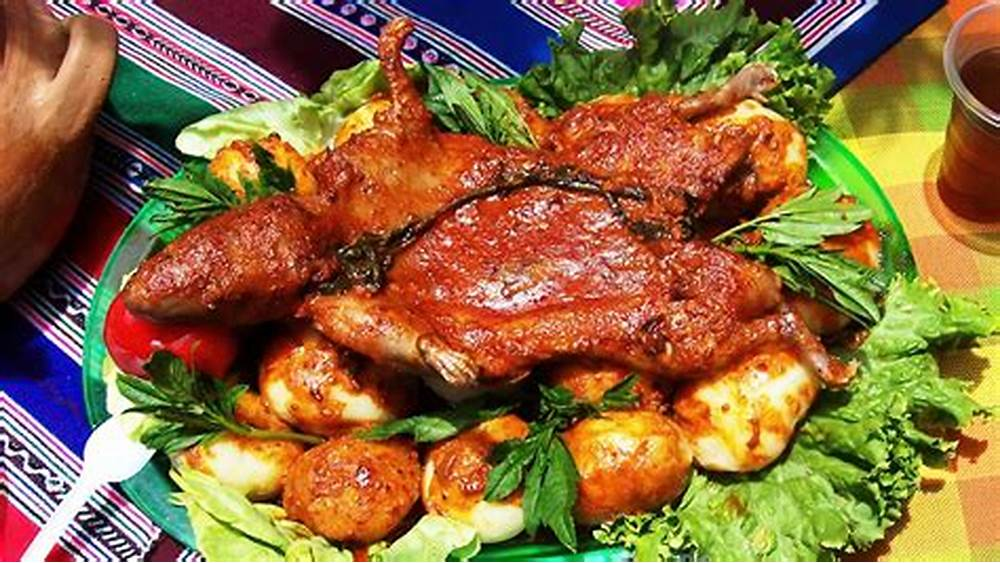
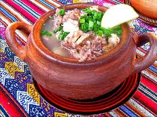

HUASCARÁN TOURS TRAVEL
¡Te brindamos el mejor tour de aventura sin necesidad de salir del Perú!
Ver más InfoAVENTURA DENTRO DEL NEVADO HUASCARÁN
HUASCARÁN TOURS TRAVEL
¡Somos tu mejor opción si se trata de adrenalina!
Actividades que podrás realizar en el Tour
El Nevado Huascarán es un patrimonia nacional del Perú y nos brinda unos paisajes maravillosos, únicos e inigualables. Las actividades que realizarás serán supervisadas por un profesional de principio a fin.
AVENTURA

El Callejón de Huaylas, es sin duda uno de los lugares más espectaculares del Perú para practicar este apasionante deporte. Ven y siente la adrenalina mientras escalas el mundo vertical de la Cordillera Blanca y Negra. Ven a disfrutar de las rutas cuidadosamente planificadas y equipadas y de sus rocas dioritas, granito blanco, rocas ígneas y mucho más... Temporada: Todo el año, recomendada entre abril a octubre. Duración: disponemos de rutas de 1/2, 1, 2, 3 y más días. Dificultad: 5.8 a 5.13b y más
ALPINISMO
La Cordillera Blanca y sus múltiples nevados de 5 y 6 mil metros son el escenario perfecto ¡para aquellos que buscan aventuras más desafiantes! La Cordillera Blanca y Huayhuash tienen en sus territorios muchas de las montañas más espectaculares y famosas del mundo; Como la montaña más hermosa del planeta "Alpamayo", la montaña más alta del Perú el "Huascarán", el majestuoso "Yerupaja" y muchos más... La cantidad de nevados con diferentes características y dificultades, lo convierten en un destino único e imperdible para todos los amantes de este deporte.
TREKKING
Pocos lugares en el mundo tienen paisajes tan hermosos como los que se encuentran en Huayhuash. Esta es la razón por la que es considerada, en la comunidad internacional, como uno de los diez senderos más espectaculares del mundo. La altitud media de la caminata es de entre 4.000 a 5.050 metros, por lo que es un reto saludable para todos aquellos amantes de esta actividad deportiva. La Cordillera Huayhuash es probablemente la caminata más impresionante de los Andes peruanos. Seis de sus picos están por encima de los 6.000 metros y otros quince alcanzan los 5.400 metros.
Contamos los mejores Hospedajes
Nuestros hospedajes vienen con paquetes incluidos previa coordinación con nosotros, hay de 3 a 5 estrellas según la preferencia y comodidad del cliente. Cada hospedaje contiene su propia politica, algunos incluso cuentan con desayuno, almuerzo y cena; como en algunos no. Aquí podrás seleccionar el hospedaje de tu agrado.

Nuestras Comidas Típicas
Cuando nos dicen Áncash casi siempre lo relacionamos con el Callejón de Huaylas o el Parque Nacional Huascarán; y si bien, los turistas viajan para conocer estos atractivos turísticos, Áncash es un departamento que encierra en su gastronomía, un gran legado de sus antiguos pobladores. Este paraíso norteño comparte en su geografía costa y sierra, lo que lo hace muy rico en variedad de productos para la gastronomía. Puedes disfrutar de un suculento Chichincaldo o un delicioso Ceviche de chocho, todo acompañado de chica de jora o un calentito, cualquiera sea tu opción, en Áncash no hay pierde. En Marca Perú nombramos algunas de los platos típicos y bebidas más conocidas.
Kuchi-Kanka

Este platillo basa se en el cerdo, pero es importante para este platillo que no exceda el año de edad. El lechón es macerado de un día para el otro con vinagre, ajos, ají mirasol, pimienta y comino; se cocina a temperatura moderada. Se sirve acompaña de papa dorada y ensalada. Esta delicia también es típica de Huancavelica.
Picante de Cuy
El Picante de Cuy, también llamado Cuy Colorado, es una receta pre-inca, originaria de la Sierra peruana. Con el paso de los años se ha extendido por todo el país, consolidándose como uno de nuestros platillos más populares y deliciosos. Si quieres aprender cómo preparar Picante de Cuy, este es el momento.
Caldo de Cabeza
El Caldo de Cabeza es una preparación clásica del Perú. Se trata de un plato típico, cuya sustancia y sabor característico es perfecto para calentar el cuerpo y el paladar. Este caldo tiene la particularidad de ser rico en vitamina B, por lo que resulta muy nutritivo. Por ello y más es una buena entrada en los restaurantes peruanos.
Lugares Turísticos a Visitar
El Parque Nacional Huascarán es un destino increíble para los amantes de la naturaleza, los aventureros y aquellos que buscan explorar la belleza de los Andes peruanos. ¡Disfruta de tu visita!.
Campo Santo Yungay
El Campo Santo de Yungay, llamado también antiguo Yungay, era una de las ciudades más bellas del Callejón de Huaylas, una ciudad que luego del terremoto quedó sepultada. Campo Santo: Está ubicada a un kilómetro y medio al sur de la nueva ciudad de Yungay; el domingo 31 de Mayo de 1970 a las 3.23 de la tarde, Yungay antiguo fue sepultado por el aluvión que se produjo, por el desprendimiento de los bloques de hielo del lado norte del Huascarán. Quedando como mudos testigos de la tragedia el Cristo redentor, el cementerio y cuatro palmeras.
Centro arqueologico de Chavín
El Sitio Arqueológico Chavín se ubica en la provincia de Huari, Región Ancash. Se desarrolló entre los años 1500 a 550 a.C. Fue un importante centro ceremonial y religioso que atrajo gente de diversas partes del mundo andino a rendir culto a los dioses que moraban en él. Se conforma de monumentales edificaciones emplazadas sobre terrazas en torno a plazas de forma cuadrada y circular construidas con bloques pétreos finamente tallados y esculpidos.
Ciudad de Yungay
Yungay (también llamada Nueva Yungay, para diferenciarla de la antigua Santo Domingo de Yungay) es una localidad peruana capital del distrito y de la provincia homónimos ubicados en el departamento de Áncash. Fue fundada en julio de 1970, 2 km al norte de las ruinas de la ciudad colonial de Santo Domingo de Yungay establecida en 1540, que fue sepultada por un alud a consecuencia del terremoto de Áncash de 1970. Se halla en la zona central del Callejón de Huaylas a una altitud media de 2,458 m s.n.m. y cuenta con una población urbana de 8,000 habitantes aproximadamente.